에너지관리기사 (2021-05-15 기출문제)
1과목: 연소공학
1. 다음 가스 중 저위발열량(MJ/kg)이 가장 낮은 것은?
- 수소
- 메탄
- 일산화탄소
- 에탄
(정답률: 55%)

2. 저질탄 또는 조분탄의 연소방식이 아닌 것은?
- 분무식
- 산포식
- 쇄상식
- 계단식
(정답률: 59%)
3. 프로판(C3H8) 및 부탄(C4H10)이 혼합된 LPG를 건조공기로 연소시킨 가스를 분석하였더니 CO2 11.32%, O2 3.76%, N2 84.92% 의 부피 조성을 얻었다. LPG 중의 프로판의 부피는 부탄의 약 몇 배인가?
- 8배
- 11배
- 15배
- 20배
(정답률: 56%)
4. 폭굉(detonation)현상에 대한 설명으로 옳지 않은 것은?
- 확산이나 열전도의 영향을 주로 받는 기체역학적 현상이다.
- 물질 내에 충격파가 발생하여 반응을 일으킨다.
- 충격파에 의해 유지되는 화학 반응 현상이다.
- 반응의 전파속도가 그 물질 내에서 음속보다 빠른 것을 말한다.
(정답률: 56%)
5. 연소실에서 연소된 연소가스의 자연통풍력을 증가시키는 방법으로 틀린 것은?
- 연돌의 높이를 높인다.
- 배기가스의 비중량을 크게 한다.
- 배기가스 온도를 높인다.
- 연도의 길이를 짧게 한다.
(정답률: 53%)
6. 연돌에서의 배기가스 분석 결과 CO2 14.2%, O2 4.5%, CO 0% 일 때 탄산가스의 최대량[CO2]max(%)는?
- 10
- 15
- 18
- 20
(정답률: 61%)
7. 액체연료 연소장치 중 회전식 버너의 특징에 대한 설명으로 틀린 것은?
- 분무각은 10~40° 정도이다.
- 유량조절범위는 1 : 5 정도이다.
- 자동제어에 편리한 구조로 되어있다.
- 부속설비가 없으며 화염이 짧고 안정한 연소를 얻을 수 있다.
(정답률: 60%)
8. 고체연료의 공업분석에서 고정탄소를 산출하는 식은?
- 100 - [수분(%)+회분(%)+질소(%)]
- 100 - [수분(%)+회분(%)+황분(%)]
- 100 - [수분(%)+황분(%)+휘발분(%)]
- 100 - [수분(%)+회분(%)+휘발분(%)]
(정답률: 71%)
9. 액체연료가 갖는 일반적이 특징이 아닌 것은?
- 연소온도가 높기 때문에 국부과열을 일으키기 쉽다.
- 발열량은 높지만 품질이 일정하지 않다.
- 화재, 역화 등의 위험이 크다.
- 연소할 때 소음이 발생한다.
(정답률: 59%)
10. 황 2kg을 완전연소 시키는데 필요한 산소의 양은 Nm3인가? (단, S의 원자량은 32이다.)
- 0.70
- 1.00
- 1.40
- 3.33
(정답률: 47%)
11. 수소가 완전 연소하여 물이 될 때, 수소와 연소용 산소와 물의 몰(mol)비는?
- 1 : 1 : 1
- 1 : 2 : 1
- 2 : 1 : 2
- 2 : 1 : 3
(정답률: 68%)
12. 폐열회수에 있어서 검토해야 할 사항이 아닌 것은?
- 폐열의 증가 방법에 대해서 검토한다.
- 폐열회수의 경제적 가치에 대해서 검토한다.
- 폐열의 양 및 질과 이용 가치에 대해서 검토한다.
- 폐열회수 방법과 이용 방안에 대해서 검토한다.
(정답률: 70%)
13. 연소 배기가스의 분석결과 CO2의 함량이 13.4%이다. 벙커C유(55L/h)의 연소에 필요한 공기량은 약 몇 Nm3/min 인가? (단, 벙커 C유의 이론공기량은 12.5 Nm3/kg 이고, 밀도는 0.93 g/cm3 이며 [CO2]max는 15.5% 이다.)
- 12.33
- 49.03
- 63.12
- 73.99
(정답률: 26%)
14. 탄소 1kg을 완전 연소시키는데 필요한 공기량은 몇 Nm3 인가?
- 22.4
- 11.2
- 9.6
- 8.89
(정답률: 53%)
15. 위험성을 나타내는 성질에 관한 설명으로 옳지 않은 것은?
- 착화온도와 위험성은 반비례한다.
- 비등점이 낮으면 인화 위험성이 높아진다.
- 인화점이 낮은 연료는 대체로 착화온도가 낮다.
- 물과 혼합하기 쉬운 가연성 액체는 물과의 혼합에 의해 증기압이 높아져 인화점이 낮아진다.
(정답률: 55%)
16. 다음 연소 반응식 중에서 틀린 것은?
- CH4 + 2O2 → CO2 + 2H2O
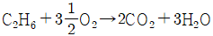
- C3H8 + 5O2 → 3CO2+ 4H2O
- C4H10 + 9O2 → 4CO2 + 5H2O
(정답률: 60%)
17. 매연을 발생시키는 원인이 아닌 것은?
- 통풍력이 부족할 때
- 연소실 온도가 높을 때
- 연료를 너무 많이 투입했을 때
- 공기와 연료가 잘 혼합되지 않을 때
(정답률: 67%)
18. 중유의 탄수소비가 증가함에 따른 발열량의 변화는?
- 무관하다.
- 증가한다.
- 감소한다.
- 초기에는 증가하다가 점차 감소한다.
(정답률: 57%)
19. 기체 연료의 저장방식이 아닌 것은?
- 유수식
- 고압식
- 가열식
- 무수식
(정답률: 68%)
20. CH4와 공기를 사용하는 열 설비의 온도를 높이기 위해 산소(O2)를 추가로 공급하였다. 연료 유량 10Nm3/h 의 조건에서 완전 연소가 이루어졌으며, 수증기 응축 후 배기가스에서 계측된 산소의 농도가 5%이고 이산화탄소(CO2)의 농도가 10%라면, 추가로 공급된 산소의 유량은 약 몇 Nm3/h 인가?
- 2.4
- 2.9
- 3.4
- 3.9
(정답률: 18%)
2과목: 열역학
21. 노즐에서 임계상태에서의 압력을 Pc, 비체적을 vc, 최대유량을 Gc, 비열비를 k라 할 때, 임계단면적에 대한 식으로 옳은 것은?
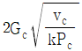
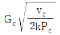
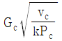
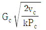
(정답률: 41%)
22. 초기체적이 Vi 상태에 있는 피스톤이 외부로 일을 하여 최종적으로 체적이 Vf인 상태로 되었다. 다음 중 외부로 가장 많은 일을 한 과정은? (단, n은 폴리트로픽 지수이다.)
- 등온 과정
- 정압 과정
- 단열 과정
- 폴리트로픽 과정(n＞0)
(정답률: 43%)
23. 20℃의 물 10kg을 대기압 하에서 100℃의 수증기로 완전히 증발시키는데 필요한 열량은 약 몇 kJ인가? (단, 수증기의 증발 잠열은 2257 kJ/kg이고 물의 평균비열은 4.2 kJ/kg·K 이다.)
- 800
- 6190
- 25930
- 61900
(정답률: 57%)
24. 30℃에서 기화잠열이 173kJ/kg 인 어떤 냉매의 포화액-포화증기 혼합물 4kg을 가열하여 건도가 20%에서 70%로 증가되었다. 이 과정에서 냉매의 엔트로피 증가량은 약 몇 kJ/K인가?
- 11.5
- 2.31
- 1.14
- 0.29
(정답률: 40%)
25. 랭킨사이클에 과열기를 설치할 경우 과열기의 영향으로 발생하는 현상에 대한 설명으로 틀린 것은?
- 열이 공급되는 평균 온도가 상승한다.
- 열효율이 증가한다.
- 터빈 출구의 건도가 높아진다.
- 펌프일이 증가한다.
(정답률: 52%)
26. 증기터빈에서 상태 ⓐ의 증기를 규정된 압력까지 단열에 가깝게 팽창 시켰다. 이 때 증기터빈 출구에서의 증기 상태는 그림의 각각 ⓑ, ⓒ, ⓓ, ⓔ이다. 이 중 터빈의 효율이 가장 좋을 때 출구의 증기 상태로 옳은 것은?
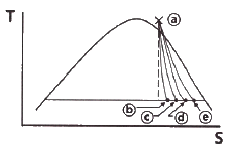
- ⓑ
- ⓒ
- ⓓ
- ⓔ
(정답률: 51%)
27. 아래와 같이 몰리에르(엔탈피-엔트로피) 선도에서 가역 단열과정을 나타내는 선의 형태로 옳은 것은?
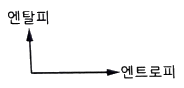
- 엔탈피축에 평행하다.
- 기울기가 양수(+)인 곡선이다.
- 기울기가 음수(-)인 곡선이다.
- 엔트로피축에 평행하다.
(정답률: 52%)
28. 정압과정에서 어느 한 계(system)에 전달된 열량은 그 계에서 어떤 상태량의 변화량과 양이 같은가?
- 내부에너지
- 엔트로피
- 엔탈피
- 절대일
(정답률: 49%)
29. 노점온도(dew point temperature)에 대한 설명으로 옳은 것은?
- 공기, 수증기의 혼합물에서 수증기의 분압에 대한 수증기 과열상태 온도
- 공기, 가스의 혼합물에서 가스의 분압에 대한 가스의 과냉상태 온도
- 공기, 수증기의 혼합물을 가열시켰을 때 증기가 없어지는 온도
- 공기, 수증기의 혼합물에서 수증기의 분압에 해당하는 수증기의 포화온도
(정답률: 54%)
30. 온도와 관련된 설명으로 틀린 것은?
- 온도 측정의 타당성에 대한 근거는 열역학 제0법칙이다.
- 온도가 0℃에서 10℃로 변화하면, 절대온도는 0K에서 283.15K로 변화한다.
- 섭씨온도는 물의 어는점과 끓는점을 기준으로 삼는다.
- SI 단위계에서 온도의 단위는 켈빈 단위를 사용한다.
(정답률: 66%)
31. 물의 임계 압력에서의 잠열은 몇 kJ/kg 인가?
- 0
- 333
- 418
- 2260
(정답률: 41%)
32. 이상기체가 'Pvn=일정' 과정을 가지고 변하는 경우에 적용할 수 있는 식으로 옳은 것은? (단, q : 단위 질량당 공급된 열량, u : 단위 질량당 내부에너지, T : 온도, P : 압력, v : 비체적, R : 기체상수, n : 상수이다.)
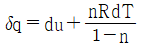
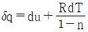
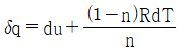
- δq = du + (1-n)RdT
(정답률: 43%)
33. 증기압축 냉동사이클을 사용하는 냉동기에서 냉매의 상태량은 압축 전·후 엔탈피가 각각 379.11 kJ/kg와 427.77 kJ/kg이고 교축팽창 후 엔탈피가 241.46kJ/kg 이다. 압축기의 효율이 80%, 소요 동력이 4.14kW라면 이 냉동기의 냉동용량은 약 몇 kW 인가?
- 6.98
- 9.98
- 12.98
- 15.98
(정답률: 40%)
34. 열역학 관계식 TdS = dH – VdP에서 용량성 상태량(extensive property)이 아닌 것은? (단, S : 엔트로피, H : 엔탈피, V : 체적, P : 압력, T : 절대온도이다.)
- S
- H
- V
- P
(정답률: 44%)
35. 다음과 같은 압축비와 차단비를 가지고 공기로 작동되는 디젤사이클 중에서 효율이 가장 높은 것은? (단, 공기의 비열비는 1.4 이다.)
- 압축비 : 11, 차단비 : 2
- 압축비 : 11, 차단비 : 3
- 압축비 : 13, 차단비 : 2
- 압축비 : 13, 차단비 : 3
(정답률: 57%)
36. 가스동력 사이클에 대한 설명으로 틀린 것은?
- 에릭슨 사이클은 2개의 정압과정과 2개의 단열과정으로 구성된다.
- 스털링 사이클은 2개의 등온과정과 2개의 정적과정으로 구성된다.
- 아스킨스 사이클은 2개의 단열과정과 정적 및 정압과정으로 구성된다.
- 르누아 사이클은 정적과정으로 급열하고 정압과정으로 방열하는 사이클이다.
(정답률: 45%)
37. 압력 3000 kPa, 온도 400℃인 증기의 내부에너지가 2926 kJ/kg이고 엔탈피는 3230 kJ/kg 이다. 이 상태에서 비체적은 약 몇 m3/kg 인가?
- 0.0303
- 0.0606
- 0.101
- 0.303
(정답률: 40%)
38. 110kPa, 20℃의 공기가 반지름 20cm, 높이 40cm인 원통형 용기 안에 채워져 있다. 이 공기의 무게는 몇 N 인가? (단, 공기의 기체상수는 287 J/kg·K 이다.)
- 0.066
- 0.64
- 6.7
- 66
(정답률: 37%)
39. 냉동효과가 200kJ/kg인 냉동사이클에서 4kW의 열량을 제거하는 데 필요한 냉매 순환량은 몇 kg/min 인가?
- 0.02
- 0.2
- 0.8
- 1.2
(정답률: 23%)
40. 냉매가 갖추어야 하는 요건으로 거리가 먼 것은?
- 증발잠열이 작아야 한다.
- 화학적으로 안정되어야 한다.
- 임계온도가 높아야 한다.
- 증발온도에서 압력이 대기압보다 높아야 한다.
(정답률: 52%)
3과목: 계측방법
41. 용적식 유량계에 대한 설명으로 옳은 것은?
- 적산유량의 측정에 적합하다.
- 고점도에는 사용할 수 없다.
- 발신기 전후에 직관부가 필요하다.
- 측정유체의 맥동에 의한 영향이 크다.
(정답률: 55%)
42. 1차 지연 요소에서 시정수 T가 클수록 응답속도는 어떻게 되는가?
- 일정하다.
- 빨라진다.
- 느려진다.
- T와 무관하다.
(정답률: 62%)
43. 압력 측정에 사용되는 액체의 구비조건 중 틀린 것은?
- 열팽창계수가 클 것
- 모세관 현상이 작을 것
- 점성이 작을 것
- 일정한 화학성분을 가질 것
(정답률: 62%)
44. 차압식 유량계에 있어 조리개 전후의 압력차이가 P1에서 P2로 변할 때, 유량은 Q1에서 Q2로 변했다. Q2에 대한 식으로 옳은 것은? (단, P2 = 2P1 이다.)
- Q2 = Q1
- Q2 = √2Q1
- Q2 = 2Q1
- Q2 = 4Q1
(정답률: 54%)
45. 다음 중 1000℃ 이상의 고온체의 연속 측정에 가장 적합한 온도계는?
- 저항 온도계
- 방사 온도계
- 바이메탈식 온도계
- 액체압력식 온도계
(정답률: 61%)
46. 가스분석계의 특징에 관한 설명으로 틀린 것은?
- 적정한 시료가스의 채취장치가 필요하다.
- 선택성에 대한 고려가 필요 없다.
- 시료가스의 온도 및 압력의 변화로 측정오차를 유발할 우려가 있다.
- 계기의 교정에는 화학분석에 의해 검정된 표준시료 가스를 이용한다.
(정답률: 65%)
47. 다음 중 습도계의 종류로 가장 거리가 먼 것은?
- 모발 습도계
- 듀셀 노점계
- 초음파식 습도계
- 전기저항식 습도계
(정답률: 47%)
48. 편차의 정(+), 부(-)에 의해서 조작신호가 최대, 최소가 되는 제어동작은?
- 온·오프동작
- 다위치동작
- 적분동작
- 비례동작
(정답률: 68%)
49. 액면계에 대한 설명으로 틀린 것은?
- 유리관식 액면계는 경우탱크의 액면을 측정하는 것이 가능하다.
- 부자식은 액면이 심하게 움직이는 곳에는 사용하기 곤란하다.
- 차압식 유량계는 정밀도가 좋아서 액면제어용으로 가장 많이 사용된다.
- 편위식 액면계는 아르키메데스의 원리를 이용하는 액면계이다.
(정답률: 44%)
50. 20L인 물의 온도를 15℃에서 80℃로 상승시키는데 필요한 열량은 약 몇 kJ인가?
- 4200
- 5400
- 6300
- 6900
(정답률: 50%)
51. 피토관에 대한 설명으로 틀린 것은?
- 5m/s 이하의 기체에서는 적용하기 힘들다.
- 먼지나 부유물이 많은 유체에는 부적당하다.
- 피토관의 머리 부분은 유체의 방향에 대하여 수직으로 부착한다.
- 흐름에 대하여 충분한 강도를 가져야 한다.
(정답률: 53%)
52. 다음 중 압력식 온도계가 아닌 것은?
- 액체팽창식 온도계
- 열전 온도계
- 증기압식 온도계
- 가스압력식 온도계
(정답률: 67%)
53. 방사고온계의 장점이 아닌 것은?
- 고온 및 이동물체의 온도측정이 쉽다.
- 측정시간의 지연이 작다.
- 발신기를 이용한 연속기록이 가능하다.
- 방사율에 의한 보정량이 작다.
(정답률: 56%)
54. 기체 크로마토그래피에 대한 설명으로 틀린 것은?
- 캐리어 기체로는 수소, 질소 및 헬륨 등이 사용된다.
- 충전재로는 활성탄, 알루미나 및 실리카겔 등이 사용된다.
- 기체의 확산속도 특성을 이용하여 기체의 성분을 분리하는 물리적은 가스분석기이다.
- 적외선 가스분석기에 비하여 응답속도가 빠르다.
(정답률: 40%)
55. 다이어프램 압력계의 특징이 아닌 것은?
- 점도가 높은 액체에 부적합하다.
- 먼지가 함유된 액체에 적합하다.
- 대기압과의 차가 적은 미소압력의 측정에 사용한다.
- 다이어프램으로 고무, 스테인리스 등의 탄성체 박판이 사용된다.
(정답률: 53%)
56. 열전대(thermocouple)는 어떤 원리를 이용한 온도계인가?
- 열팽창율 차
- 전위 차
- 압력 차
- 전기저항 차
(정답률: 58%)
57. 액주식 압력계의 종류가 아닌 것은?
- U자관형
- 경사관식
- 단관형
- 벨로즈식
(정답률: 51%)
58. 불규칙하게 변하는 주변 온도와 기압 등이 원인이 되며, 측정 횟수가 많을수록 오차의 합이 0에 가까운 특징이 있는 오차의 종류는?
- 개인오차
- 우연오차
- 과오오차
- 계통오차
(정답률: 56%)
59. 차압식 유량계의 종류가 아닌 것은?
- 벤투리
- 오리피스
- 터빈유량계
- 플로우노즐
(정답률: 56%)
60. 다음 중 송풍량을 일정하게 공급하려고 할 때 가장 적당한 제어방식은?
- 프로그램제어
- 비율제어
- 추종제어
- 정치제어
(정답률: 56%)
4과목: 열설비재료 및 관계법규
61. 에너지이용 합리화법령에 따라 자발적 협약체결기업에 대한 지원을 받기 위해 에너지사용자와 정부 간 자발적 협약의 평가기준에 해당하지 않는 것은?
- 계획 대비 달성률 및 투자실적
- 에너지이용 합리화 자금 활용실적
- 자원 및 에너지의 재활용 노력
- 에너지절감량 또는 에너지의 합리적인 이용을 통한 온실가스배출 감축량
(정답률: 47%)
62. 소성가마 내 열의 전열방법으로 가장 거리가 먼 것은?
- 복사
- 전도
- 전이
- 대류
(정답률: 58%)
63. 도염식 가마(down draft kiln)에서 불꽃의 진행방향으로 옳은 것은?
- 불꽃이 올라가서 가마천장에 부딪쳐 가마바닥의 흡입구멍으로 빠진다.
- 불꽃이 처음부터 가마바닥과 나란하게 흘러 굴뚝으로 나간다.
- 불꽃이 연소실에서 위로 올라가 천장에 닿아서 수평으로 흐른다.
- 불꽃의 방향이 일정하지 않으나 대개 가마 밑에서 위로 흘러나간다.
(정답률: 59%)
64. 아래는 에너지이용 합리화법령상 에너지의 수급차질에 대비하기 위하여 산업통상자원부장관이 에너지저장의무를 부과할 수 있는 대상자의 기준이다. ( )에 들어갈 용어는?
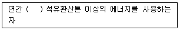
- 1천
- 5천
- 1만
- 2만
(정답률: 54%)
65. 다음 중 에너지이용 합리화법령에 따른 검사대상기기에 해당하는 것은?
- 정격용량이 0.5MW인 철금속가열로
- 가스사용량이 20kg/h 인 소형 온수보일러
- 최고사용압력이 0.1MPa이고, 전열면적이 4m2인 강철제 보일러
- 최고사용압력이 0.1MPa 이고, 동체 안지름이 300mm이며, 길이가 500mm인 강철제 보일러
(정답률: 47%)
66. 샤모트(chamotte) 벽돌의 원료로서 샤모트 이외의 가소성 생점토(生粘土)를 가하는 주된 이유는?
- 치수 안정을 위하여
- 열전도성을 좋게 하기 위하여
- 성형 및 소결성을 좋게 하기 위하여
- 건조 소성, 수축을 미연에 방지하기 위하여
(정답률: 58%)
67. 크롬벽돌이나 크롬-마그벽돌이 고온에서 산화철을 흡수하여 표면이 부풀어 오르고 떨어져 나가는 현상은?
- 버스팅
- 큐어링
- 슬래킹
- 스폴링
(정답률: 57%)
68. 에너지이용 합리화법령상 효율관리가지재에 대한 에너지소비효율등급을 거짓으로 표시한 자에 해당하는 과태료는?
- 3백만원 이하
- 5백만원 이하
- 1천만원 이하
- 2천만원 이하
(정답률: 35%)
69. 에너지이용 합리화법령에 따라 효율관리기자재의 제조업자 또는 수입업자는 효율관리시험기관에서 해당 효율관리기자재의 에너지 사용량을 측정 받아야 한다. 이 시험기관은 누가 지정하는가?
- 과학기술정보통신부장관
- 산업통산자원부장관
- 기획재정부장관
- 환경부장관
(정답률: 67%)
70. 보온재의 구비 조건으로 틀린 것은?
- 불연성일 것
- 흡수성이 클 것
- 비중이 작을 것
- 열전도율이 작을 것
(정답률: 59%)
71. 에너지법령상 시·도지사는 관할 구역의 지역적 특성을 고려하여 저탄소 녹색성장 기본법에 따른 에너지기본계획의 효율적인 달성과 지역경제의 발전을 위한 지역에너지 계획을 몇 년마다 수립·시행하여야 하는가?
- 2년
- 3년
- 4년
- 5년
(정답률: 53%)
72. 에너지이용 합리화법령에 따라 에너지절약 전문기업의 등록신청 시 등록신청서에 첨부해야할 서류가 아닌 것은?
- 사업계획서
- 보유장비명세서
- 기술인력명세서(자격증명서 사본 포함)
- 감정평가업자가 평가한 자산에 대한 감정평가서(법인인 경우)
(정답률: 54%)
73. 에너지이용 합리화법령상 검사의 종류가 아닌 것은?
- 설계검사
- 제조검사
- 계속사용검사
- 개조검사
(정답률: 42%)
74. 고온용 무기질 보온재로서 경량이고 기계적 강도가 크며 내열성, 내수성이 강하고 내마모성이 있어 탱크, 노벽 등에 적합한 보온재는?
- 암면
- 석면
- 규산칼슘
- 탄산마그네슘
(정답률: 55%)
75. 에너지이용 합리화법령상 특정열사용기자재의 설치·시공이나 세관(洗罐)을 업으로 하는 자는 어떤 법령에 따라 누구에게 등록하여야 하는가?
- 건설산업기본법, 시·도지사
- 건설산업기본법, 과학기술정보통신부장관
- 건설기술 진흥법, 시장·구청장
- 건설기술 진흥법, 산업통상자원부장관
(정답률: 54%)
76. 작업이 간편하고 조업주기가 단축되며 요체의 보유열을 이용할 수 있어 경제적인 반연속식 요는?
- 셔틀요
- 윤요
- 터널요
- 도염식요
(정답률: 56%)
77. 에너지이용 합리화법령에 따라 열사용기자재 관리에 대한 설명으로 틀린 것은?
- 계속사용검사는 검사유효기간의 만료일이 속하는 연도의 말까지 연기할 수 있으며, 연기하려는 자는 검사대상기기 검사연기 신청서를 한국에너지공단이사장에게 제출하여야 한다.
- 한국에너지공단이사장은 검사에 합격한 검사대상기기에 대해서 검사 신청인에게 검사일로부터 7일 이내에 검사증을 발급하여야 한다.
- 검사대상기기관리자의 선임신고는 신고 사유가 발생한 날로부터 20일 이내에 하여야 한다.
- 검사대상기기의 설치자가 사용 중인 검사대상기기를 폐기한 경우에는 폐기한 날부터 15일 이내에 검사대상기기 폐기신고서를 한국에너지공단이사장에게 제출하여야 한다.
(정답률: 65%)
78. 내식성, 굴곡성이 우수하고 양도체이며 내압성도 있어서 열교환기용 전열관, 급수관 등 화학공업용으로 주로 사용되는 관은?
- 주철관
- 동관
- 강관
- 알루미늄관
(정답률: 66%)
79. 제철 및 제강공정 중 배소로의 사용 목적으로 가장 거리가 먼 것은?
- 유해성분의 제거
- 산화도의 변화
- 분상광석의 괴상으로서의 소결
- 원광석의 결합수의 제거와 탄산염의 분해
(정답률: 50%)
80. 배관의 축 방향 응력 σ(kPa)을 나타낸 식은? (단, d : 배관의 내경(mm), p : 배관의 내압(kPa), t : 배관의 두께(mm) 이며, t는 충분히 얇다.)
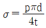
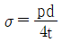
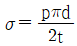
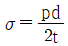
(정답률: 47%)
5과목: 열설비설계
81. 증기압력 120kPa의 포화증기(포화온도 104.25℃, 증발잠열 2245 kJ/kg)를 내경 52.9mm, 길이 50m인 강관을 통해 이송하고자 할 때 트랩 선정에 필요한 응축수량(kg)은? (단, 외부온도 0℃, 강관의 질량 300kg, 강관비열 0.46 kJ/kg·℃ 이다.)
- 4.4
- 6.4
- 8.4
- 10.4
(정답률: 33%)
82. 보일러의 용량을 산출하거나 표시하는 값으로 틀린 것은?
- 상등증발량
- 보일러마력
- 재열계수
- 전열면적
(정답률: 59%)
83. 프라이밍 및 포밍의 발생 원인이 아닌 것은?
- 보일러를 고수위로 운전할 때
- 중기부하가 적고 증발수면이 넓을 때
- 주중기밸브를 급히 열었을 때
- 보일러수에 불순물, 유지분이 많이 포함되어 있을 때
(정답률: 52%)
84. 프라이밍 현상을 설명한 것으로 틀린 것은?
- 절탄기의 내부에 스케일이 생긴다.
- 안전밸브, 압력계의 기능을 방해한다.
- 워터해머(water hanmmer)를 일으킨다.
- 수면계의 수위가 요동해서 수위를 확이하기 어렵다.
(정답률: 50%)
85. 두께 20cm 의 벽돌의 내측에 10mm의 모르타르와 5mm의 플라스터 마무리를 시행하고, 외측은 두께 15mm의 모르타르 마무리를 시공하였다. 아래 계수를 참고할 때, 다층벽의 총 열관류율(W/m2·℃)은?
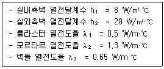
- 1.95
- 4.57
- 8.72
- 12.31
(정답률: 32%)
86. 100kN의 인장하중을 받는 한쪽 덮개판 맞대기 리벳이음이 있다. 리벳의 지름이 15mm, 리벳의 허용전단력이 60MPa 일 때 최소 몇 개의 리벳이 필요한가?
- 10
- 8
- 6
- 4
(정답률: 32%)
87. 노통연관식 보일러의 특징에 대한 설명으로 옳은 것은?
- 외분식이므로 방산손실열량이 크다.
- 고압이나 대용량보일러로 적당하다.
- 내부청소가 간단하므로 급수처리가 필요없다.
- 보일러의 크기에 비하여 전열면적이 크고 효율이 좋다.
(정답률: 51%)
88. 보일러의 내부청소 목적에 해당하지 않는 것은?
- 스케일 슬러지에 의한 보일러 효율 저하방지
- 수면계 노즐 막힘에 의한 장해방지
- 보일러 수 순환 저해방지
- 수트블로워에 의한 매연 제거
(정답률: 63%)
89. 압력용기에 대한 수압시험의 압력기준으로 옳은 것은?
- 최고 사용압력이 0.1MPa 이상의 주철제 압력용기는 최고 사용압력의 3배이다.
- 비철금속제 압력용기는 최고 사용압력의 1.5배의 압력에 온도를 보정한 압력이다.
- 최고 사용압력이 1MPa 이하의 주철제 압력용기는 0.1MPa 이다.
- 법랑 또는 유리 라이닝한 압력용기는 최고 사용압력의 1.5배의 압력이다.
(정답률: 41%)
90. 보일러의 스테이를 수리·변경하였을 경우 실시하는 검사는?
- 설치검사
- 대체검사
- 개조검사
- 개체검사
(정답률: 50%)
91. 노통 보일러에 갤러웨이 관을 직각으로 설치하는 이유로 적절하지 않은 것은?
- 노통을 보강하기 위하여
- 보일러수의 순환을 돕기 위하여
- 전열 면적을 증가시키기 위하여
- 수격작용을 방지하기 위하여
(정답률: 43%)
92. 보일러의 전열면에 부착된 스케일 중 연질 성분인 것은?
- Ca(HCO3)2
- CaSO4
- CaCl2
- CaSiO3
(정답률: 41%)
93. 이상적은 흑체에 대하여 단위면적당 복사에너지 E와 절대온도 T의 관계식으로 옳은 것은? (단, σ는 스테판-볼츠만 상수이다.)
- E = σT2
- E = σT4
- E = σT6
- E = σT8
(정답률: 64%)
94. 공기예열기 설치에 따른 영향으로 틀린 것은?(오류 신고가 접수된 문제입니다. 반드시 정답과 해설을 확인하시기 바랍니다.)
- 연소효율을 증가시킨다.
- 과잉공기량을 줄일 수 있다.
- 배기가스 저항이 줄어든다.
- 질소산화물에 의한 대기오염의 우려가 있다.
(정답률: 35%)
95. 일반적으로 보일러에 사용되는 중화방청제가 아닌 것은?
- 암모니아
- 히드라진
- 탄산나트륨
- 포름산나트륨
(정답률: 45%)
96. 내압을 받는 보일러 동체의 최고사용압력은? (단, t : 두께(mm), P : 최고사용압력(MPa), Di : 동체 내경(mm), η : 길이 이음효율, σa : 허용인장응력(MPa), α : 부식여유, k : 온도상수이다.)
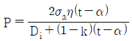
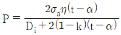
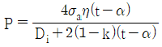
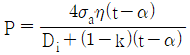
(정답률: 35%)
97. 관판의 두께가 20mm이고, 관 구멍의 지름이 51mm인 연관의 최소피치(mm)는 얼마인가?
- 35.5
- 45.5
- 52.5
- 62.5
(정답률: 23%)
98. 다음 각 보일러의 특징에 대한 설명 중 틀린 것은?
- 입형 보일러는 좁은 장소에도 설치할 수 있다.
- 노통 보일러는 보유수량이 적어 증기발생 소요시간이 짧다.
- 수관 보일러는 구조상 대용량 및 고압용에 적합하다.
- 관류 보일러는 드럼이 없어 초고압보일러에 적합하다.
(정답률: 44%)
99. 수관식 보일러에 급수되는 TDS가 2500 μS/cm 이고 보일러수의 TDS는 5000 μS/cm이다. 최대증기 발생량이 10000 kg/h 라고 할 때 블로우다운량(kg/h)은?
- 2000
- 4000
- 8000
- 10000
(정답률: 24%)
100. 원통형보일러의 노통이 편심으로 설치되어 관수의 순환작용을 촉진시켜 줄 수 있는 보일러는?
- 코르니시 보일러
- 라몬트 보일러
- 케와니 보일러
- 기관차 보일러
(정답률: 57%)